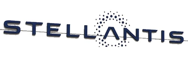
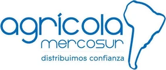

Reportes e inspecciones digitales
Desde el celular, con fotos, fecha, hora y geolocalización. Sin papeles que se pierden.
Prevención de riesgos digital a la medida · Chile
Soy Hans Meneses. Hace más de 20 años acompaño a gerencias, áreas de personas, contratistas y pymes a cumplir el DS 44, enfrentar fiscalizaciones y bajar su accidentabilidad, con herramientas digitales que dejan todo en evidencia. Lo que antes era carpeta, hoy está en el celular de tu equipo, firmado y listo para la fiscalización.
«La seguridad no se implementa solamente con documentos. Se construye en las personas, en los líderes y en la cultura de la organización.»
— Hans, SafetyCoachEmpresas e instituciones con las que he trabajado


Hablemos en tu idioma
Necesitas saber que tu empresa está protegida, sin convertirte en experto en normativa.
“Nuestra empresa creció y me dieron más responsabilidades. Hans me ayudó a implementar el DS 44 y los protocolos.”Patricio Abarca · Alex Stewart International
Inducciones, capacitaciones, denuncias y protocolos: todo pasa por tu área y todo debe quedar respaldado.
Ver Ley Karin y riesgo psicosocial →
Necesito ordenar inducciones y Ley Karin“Tenemos más de 20 casinos concesionados con exigencias distintas. Con Hans y sus sistemas digitales sabemos cómo estamos, en tiempo real, y cumplimos a nuestros clientes.”Cecilia Gallardo · Food Chef
Tu mandante no solo pide que cumplas la ley: pide que lo demuestres, con papeles en regla y equipos que trabajen seguro.
¿Eres mandante? Conoce el programa de cumplimiento para tus contratistas →
Preparar mi empresa para el mandanteSabes que tienes que cumplir, pero no tienes tiempo ni un experto en casa. Te digo qué es urgente y lo hacemos juntos.
“Junto a SafetyCoach logramos nuestro sueño: abrir nuestro restaurante en Pirque, Onde Skinners, con todos los permisos y autorizaciones sanitarias de la SEREMI.”Alex Skinner · Onde Skinners, Pirque
Soluciones
SafetyCoach Digital
Tu experiencia, mi expertise y la tecnología, trabajando juntos por tu equipo.
Tú conoces tu operación. Tus supervisores y tu equipo saben dónde está el riesgo. Yo aporto más de 20 años en prevención. Sumamos la inteligencia artificial para cocrear contigo herramientas simples, que tu gente usa de verdad y que dejan evidencia de tu gestión, todos los días.
No se trata de tener más tecnología. Se trata de que la tecnología trabaje para cuidar a tu equipo.
Desde el celular, con fotos, fecha, hora y geolocalización. Sin papeles que se pierden.
Cápsulas breves e interactivas, con evaluación y firma del trabajador. Asistencia y aprendizaje registrados.
El trabajador escanea, revisa el equipo y queda autorizado. Si no inspecciona, no opera.
MIPER, procedimientos y señalética en formato visual, fácil de entender en terreno.
Cada registro con responsable, lugar y momento. Listo para auditorías, mandantes y fiscalizaciones.
Hallazgos, acciones cerradas y avance del programa, en reportes claros para la gerencia.


Como anillo al dedo: lo creamos contigo, lo ajustamos en terreno y lo dejamos funcionando.
Pedir una demo de 15 minutosLa información de tus trabajadores se trata con confidencialidad y se usa solo para la gestión de seguridad de tu empresa.
Experiencia


Por confidencialidad no publico nombres de empresas ni datos internos. Te cuento el rubro, el desafío y lo que logramos.
Servicios de alimentación
Industria química
Inspección y certificación
Taller de manufactura
Gastronomía
Pymes con fiscalización
Prueba la demo con una empresa ficticia: inducción IRL con firma, cápsula de capacitación e inspección pre-uso. O agéndala conmigo en 15 minutos.
“Nuestra empresa creció y me dieron más responsabilidades. Hans me ayudó a implementar el DS 44 y los protocolos.”
Patricio AbarcaExperto en Prevención · Alex Stewart International
“Tenemos más de 20 casinos concesionados, cada uno con exigencias de seguridad, registros e inducciones distintos. Junto a Hans y sus sistemas digitales sabemos cómo estamos, en línea y en tiempo real, y damos cumplimiento a todos los requerimientos de nuestros clientes.”
Cecilia GallardoEncargada de Gestión de Personas · Food Chef
“Junto a SafetyCoach logramos nuestro sueño: abrir nuestro restaurante en Pirque, Onde Skinners, con todos los permisos y autorizaciones sanitarias de la SEREMI.”
Alex SkinnerRestaurante Onde Skinners, Pirque
¿Por qué SafetyCoach?
Del cumplimiento en papel a una cultura que se sostiene.
Formas simples de trabajar juntos. Alcance y valor cerrados desde la primera reunión, sin sorpresas.
Para empezar
Valor fijo, en 1 a 2 semanas. Sabes exactamente dónde estás y qué hacer primero.
Recomendado
Tu área de prevención por una mensualidad según trabajadores y centros de trabajo.
Tecnología
Inducciones IRL, cápsulas con firma e inspecciones por QR, por centro de trabajo.
Mandantes
Para empresas con muchos contratistas: un estándar común, controlado en línea.

Mi historia
No llegué a la prevención solamente desde los libros. Trabajé como responsable de seguridad en construcción, minería e industria química, junto a empresas nacionales e internacionales; entre ellas, cerca de 10 años con Aislapol S.A., en su momento unidad de negocio de BASF. He investigado accidentes, he estado en emergencias y he visto de cerca lo que pasa cuando un procedimiento existe en papel pero nadie lo cree.
También trabajé desde una mutualidad, atendiendo a empresas y conversando con gerencias. Ahí confirmé algo: las organizaciones que mejoran no son las que tienen más carpetas, sino las que tienen líderes comprometidos y trabajadores que entienden por qué se cuidan.
Por eso sumé el coaching y las herramientas de bienestar a mi formación técnica. SafetyCoach nace de esa mezcla: el criterio de un prevencionista con experiencia y la capacidad de acompañar a las personas en el cambio.


Con quién trabajo
Trabajo con las que quieren, como mínimo, cumplir la ley, y tienen un compromiso real de pasar a su siguiente nivel.
¿Tienes real tolerancia cero a los accidentes en tu organización?
No. Puedo funcionar como tu área externa de prevención. Si ya tienes prevencionista, lo apoyo para que deje de estar sobrecargado y pueda enfocarse en lo importante.
Una visita de levantamiento, revisión de documentos y evidencias, y un informe con las brechas priorizadas y una hoja de ruta. Es la base para decidir si implementas por tu cuenta o con acompañamiento.
Sí. Atiendo empresas en distintas regiones de Chile, combinando visitas en terreno y reuniones online según lo que necesite cada etapa.
Depende del tamaño de la empresa, el número de centros de trabajo y el nivel de apoyo. Después de una primera conversación te propongo un plan concreto con alcance y valor cerrados.
No. Son instancias formativas y prácticas para equipos y líderes, vinculadas al bienestar laboral y la gestión psicosocial. No reemplazan la atención de salud mental profesional.
Revisamos lo observado, corregimos y ordenamos las evidencias, y armamos un plan para que no se repita. Mientras antes se actúe, más opciones hay.
Hablemos de tu empresa
Respondo personalmente. Antes de conversar te enviaré una breve entrevista para que vayamos directo a lo importante.